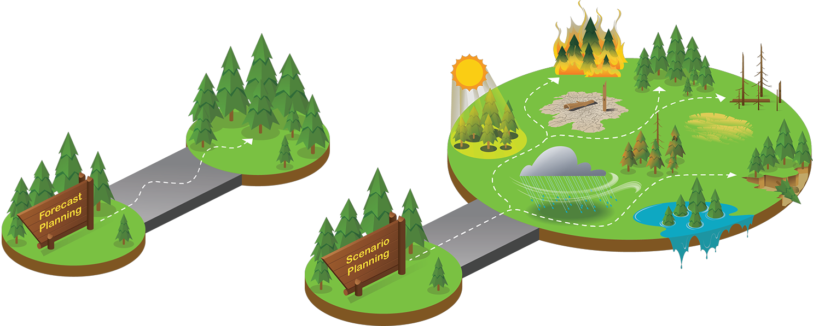
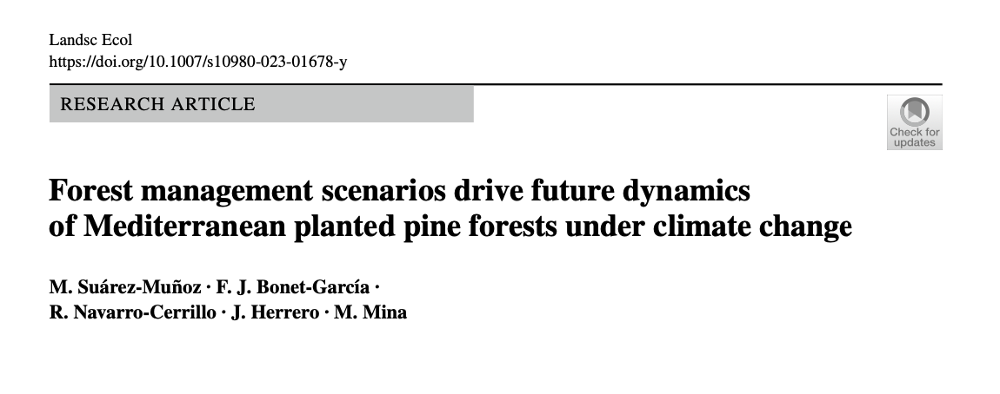
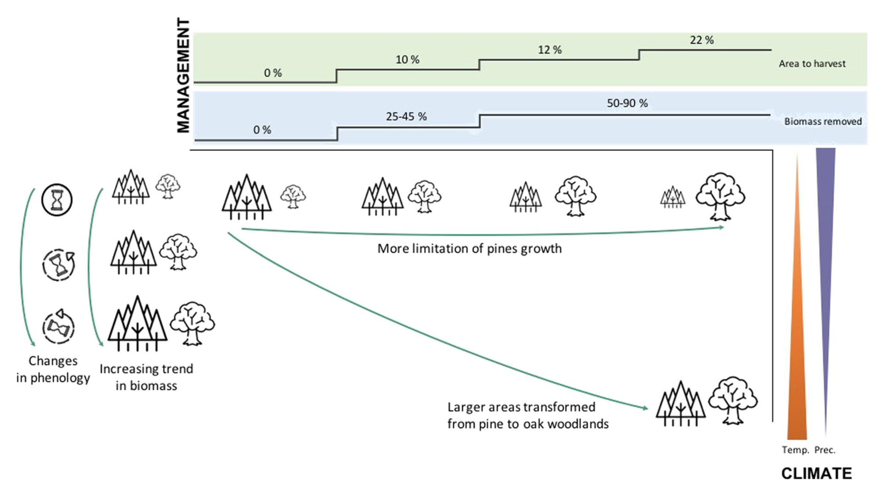
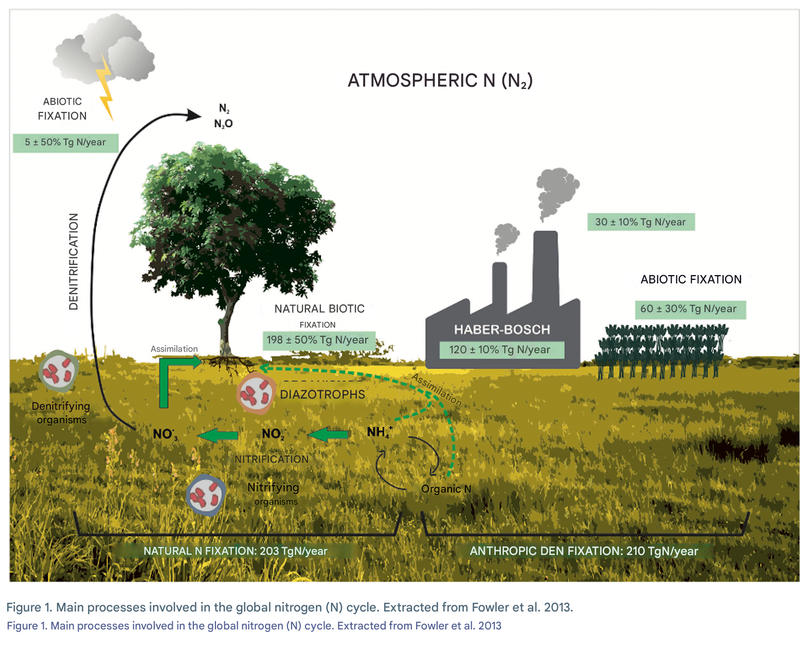
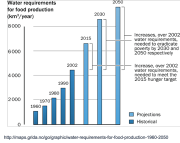
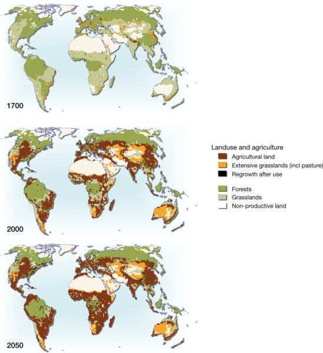
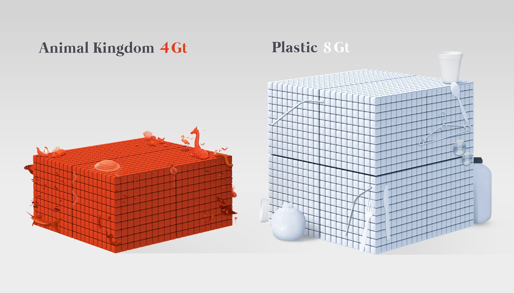
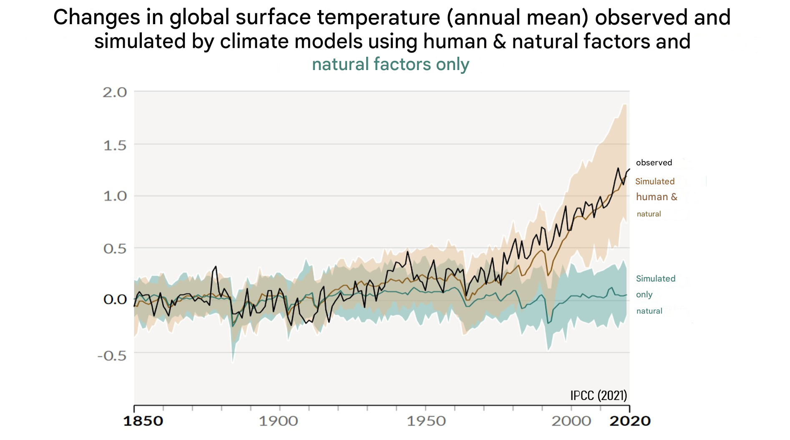
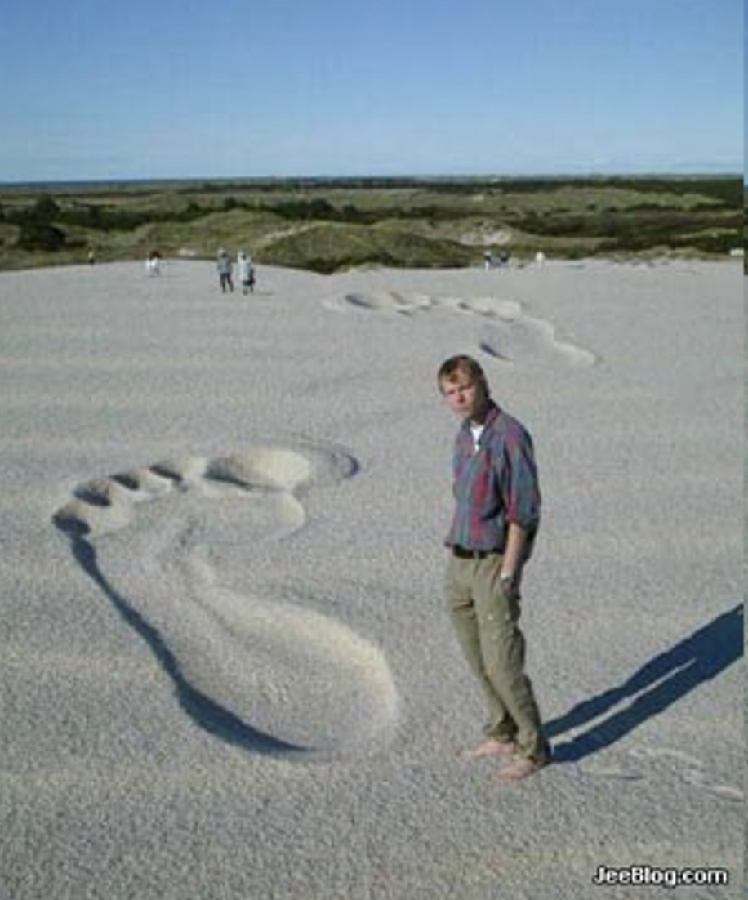

- Global change: Welcome to the Anthropocene
- Human activity no longer has consequences only on a local scale. It is also on a global scale.
- Exponential increase in human activity since the invention of the steam engine
- Global implications
- Local implications
- Managing (Socio)ecosystems at the local scale requires taking into account global changes.
- The evolution of a given socio-ecosystem no longer depends only on what happens in them. Managing (Socio)ecosystems on a local scale requires taking global changes into account.
- Examples
-
- 
-
- 
- 
-
- Global Change
- Formal definition
-
- Change is happening rapidly (in the last 200 years).
- It is not caused by an external agent, but by a species on the planet.
-
- Drivers of global change
- Alterations of biogeochemical cycles.
- Nitrogen
- 
-
- Nitrogen deposition
- Eutrophication
-
- Water usage
- 
- Land use change
-
- 
-
- 
-
- Climate change
- 
- Threat to biodiversity (invasive species and others)
- We are simplifying natural systems
- Why this is important
- Where extinctions occur
- This brings us to the concept of the Anthropocene.
- 
-
- Increasing intensity of our influence on the environment: global change
- Increasing our level of awareness as a species.